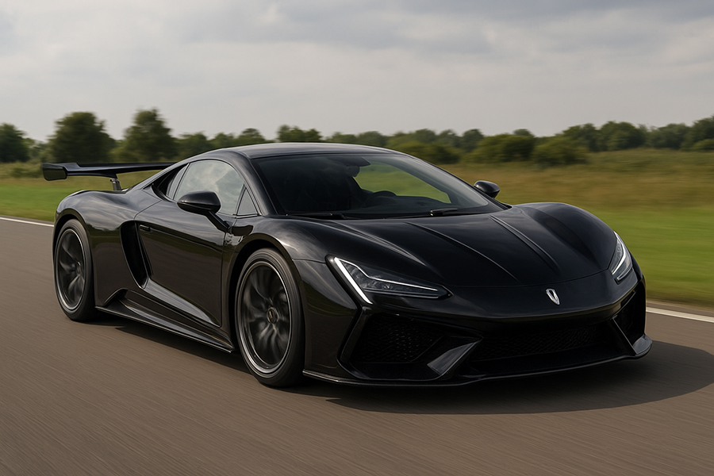

The world’s first series-produced 1200V ultra-high voltage platform, purpose-built for the YANGWANG U9 Xtreme’s track performance. The e⁴ Platform and DiSusX Intelligent Body Control System, built on this 1200V ultra-high voltage platform, elevate track capability. Combined with an optimized thermal management system, they enable sustained and confident delivery of extreme performance. To meet the demands of track-intensive conditions, the YANGWANG U9 Xtreme features an entirely re-engineered cooling system to support the 133% increased total power output. With a high-flow oil pump and an all-new three-dimensional motor cooling solution, the thermal-exchange efficiency of the electric drive system rises by 40%. This ensures consistent peak performance even during sustained maximum power output and energy-recovery conditions, suppressing thermal fade and delivering maximum power throughout. The e4 Platform is a powertrain system centered on quad-motor independent drive. It features features four breakthrough high-RPM motors, each delivering a peak power of 555kW, together generating over 3000PS of astonishing power. But its value goes far beyond the power, and also delivers millisecond-level body stabilization during aggressive driving. The distributed four-wheel drive fundamentally redefines traditional steering principles. It can actively create the yaw torque required for steering through the vectored distribution of torque at the wheels alone. This means it can achieve steering through torque that does not depend on the angle of the front wheels. This elevates handling precision and agility, redefining cornering performance forhigh-powered all-wheel-drive supercars.